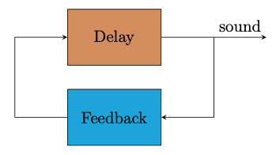

Interacting with Feedback
Delay line with feedback
This is a very simple example of a delay line with feedback. This slider controls the delay time: how long it would take for a click to be heard a second time.
Notes
- If you move the slider to the far right, you can hear discrete echoes
- If you move the slider to the left side, you hear the pitch rise: very short delay times produce higher pitches.
Diagram
